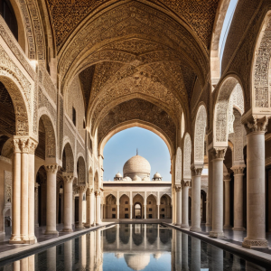

Medeniyetin Işıltılı Zirveleri
Medeniyet, insanlık tarihinin en büyük miraslarından biridir ve bu mirasın en görkemli yansımalarından bazılarını hem antik hem de modern dünya harikaları oluşturur. Tarih boyunca, insanlık, kültür ve uygarlık anlayışını yansıtan ve günümüze kadar ulaşan eşsiz yapılar inşa etmiştir. Antik dünya harikalarından başlayarak, ölümsüzleşmiş mimari başarıları inceleyecek, ardından modern dünyanın nasıl kendi döneminin sınırlarını aştığını ve “medeniyet” kavramına yeni anlamlar kattığını keşfedeceğiz. Bu yolculuk, insan eliyle yaratılan ve zamanı aşan eserlerin büyüleyici hikayeleriyle medeniyetin ışıltılı zirvelerine çıkacak. 
Antik Dünya Harikaları, insanlık tarihinin en muazzam başarılarını temsil eder ve medeniyetin nasıl büyük ilerlemeler kaydettiğini gözler önüne serer. Bu yapılar, yapıldıkları dönemlerdeki medeniyetlerin teknolojik, mimari ve sanatsal becerilerinin birer kanıtıdır. Antik dünyanın bu eşsiz yapıları, zamanın ötesinde bir ilham kaynağı olmuştur.
{kind=link}
- Büyük Piramitler (Mısır): Medeniyetin becerisinin ve iddiasının simgesi.
- Babil’in Asma Bahçeleri: Efsaneye göre zengin ve görkemli bitki örtüsüyle donatılmış, medeniyetin doğa ile uyum içinde olma arzusunun bir göstergesi.
- Zeus Heykeli (Olimpia): Dönemin sanat ve inanç sistemlerinin özgün birleşimi.
- Artemis Tapınağı (Efes): Dini inancın ve mimari ustalığın müthiş bir örneği.
Bu yapılar, medeniyetin sadece fiziksel güç ve maddi kaynaklarla değil, aynı zamanda estetik duyarlılık ve sanatsal ifadeyle de zenginleşebileceğinin altını çizer. Antik dünya harikalarını incelemek, medeniyetin ne kadar karmaşık, zengin ve çeşitlilik gösterdiğini anlamamıza yardımcı olur.
Modern zamanlar, mimari ve teknolojinin sınırlarını zorlayarak medeniyetin ulaştığı muazzam başarıların bir göstergesi haline gelmiştir. Gelişmiş teknoloji ve yenilikçi mühendislik sayesinde, bugünkü medeniyet dünya çapında benzersiz yapılar inşa etmeyi başarmıştır. Bu yapılar, modern medeniyetin gücünü ve kudretini gözler önüne sermektedir.
- Burj Khalifa (Dubai, Birleşik Arap Emirlikleri): Dünyanın en yüksek yapısı, gökyüzüne 828 metre yükseklikle uzanır ve modern medeniyetin ulaşabileceği zirveleri temsil eder.
- Shanghai Tower (Şanghay, Çin): 632 metre yüksekliği ile modern mühendislik ve sürdürülebilir tasarımın harikasıdır.
- The Louvre Pyramid (Paris, Fransa): Cam ve metal kullanılarak yapılan bu piramid, tarihi ve modern medeniyetin buluştuğu bir noktadır.
Bu yapılar, medeniyetin sadece geçmişte değil, günümüzde de nasıl büyük işler başarabileceğinin canlı kanıtlarıdır. İnsanlık, geçmişin temelleri üzerine inşa ederek, medeniyetin yeni zirvelerine ulaşmaya devam etmektedir.